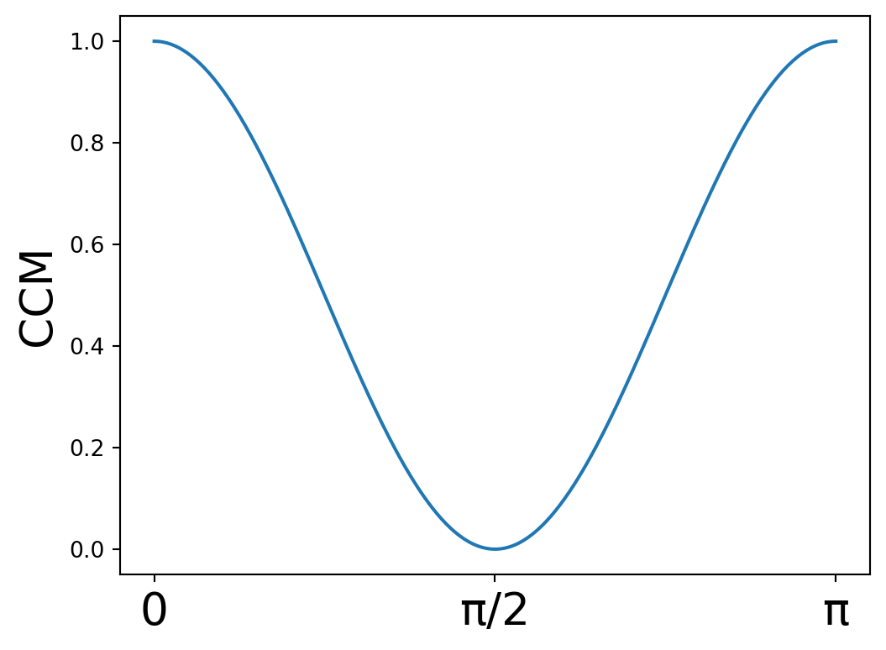
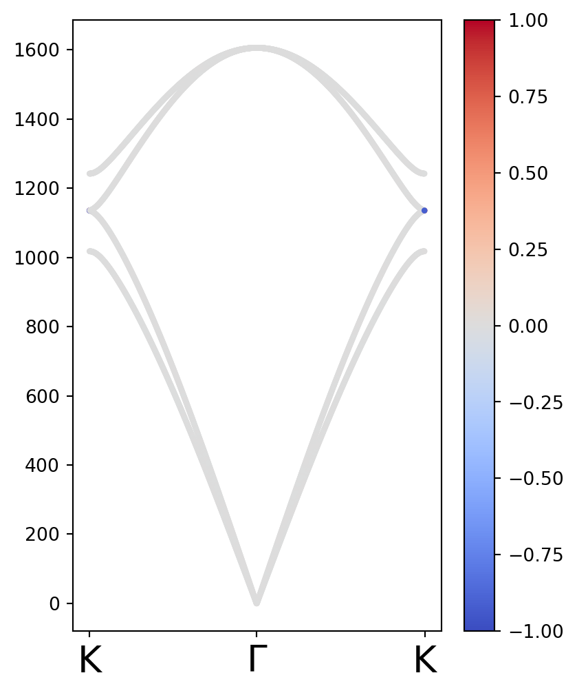
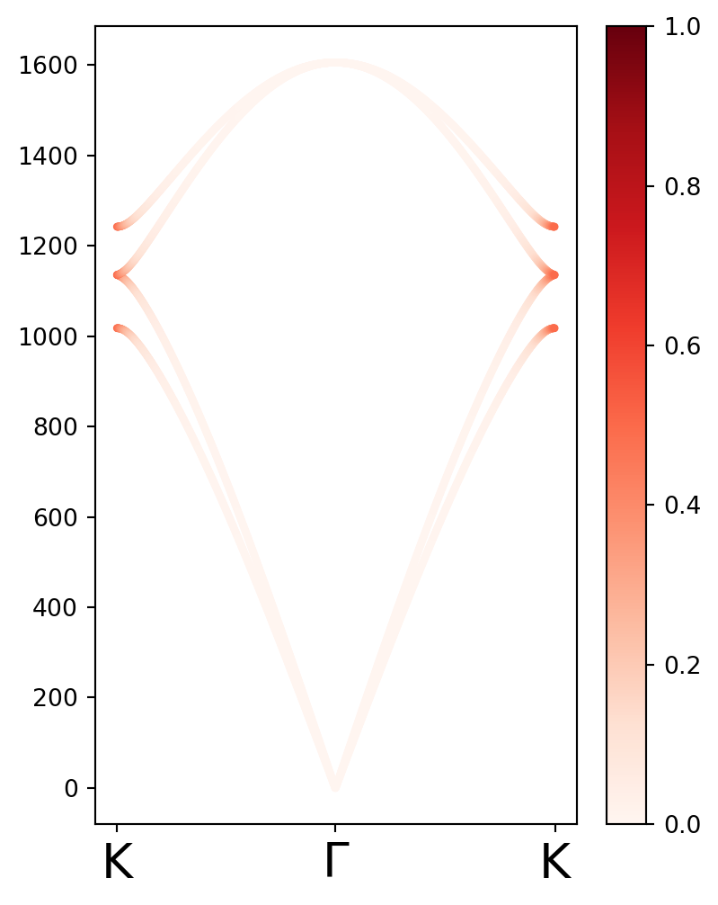

from pylab import *3 Cálculos de Medida de Quiralidad Continua
En el siguiente documento se realizan los cálculos de Medida de Quiralidad Continua (Continuous Chirality Measure, CCM) para el sistema de grafeno dopado con Carbono 13.
Este sistema mostraba aparición de fonones quirales usando como criterio la polarización de modo normal del fonón. En este código, analizamos si la CCM da resultados consistentes.
3.1 Medida de Quiralidad Continua
La quiralidad se define como el rompimiento de toda posible simetría de espejo. La propuesta detrás de la técnica de CCM es la medición de simetría continua, la cual compara la superposición de un objeto con el objeto más similar que contenga la simetría de interés. En el caso de quiralidad, esto implica medir la superosición entre un objeto y el objeto aquiral más similar. Específicamente, si \(|Q\rangle\) es un objeto representado por un vector en un espacio vectorial, el objeto aquiral más cercano es \[|Q'\rangle = \frac{1}{2}(\mathbb{1} + \sigma)|Q\rangle,\] donde \(\sigma\) es la simetría de espejo tal que \(\langle Q|Q'\rangle\) sea máxima. Con esto en mente, la cantidad normalizada \(\langle Q|Q'\rangle / \langle Q|Q\rangle\) siempre será uno para una estructura aquiral y se aproxima a cero para una estructura quiral. DIcho eso, podemos expresar la Medida de Quiralidad continua como \[\text{CCM}(Q) = 1 - \frac{\langle Q|Q'\rangle}{\langle Q|Q\rangle}.\] Vemos que CCM va de 0 a 1, donde los objetos aquirales tienen CCM nula, mientras que los objetos quirales tienen CCM alta.
Para medir la quiralidad de una estructura, \(|Q\rangle\) toma el valor de las coordenadas relativas al centro de masa pesadas por el centro de masa: \(|q_{i}\rangle = \sqrt{m_{i}}(x_{i},y_{i},z_{i})^{\text{T}}\). Entonces, la CCM asociada a la estructura es \[\text{CCM}(Q) = 1 - \frac{\sum_{i = 1}^{N} \langle q_{i}|\mathbb{1} + \sigma | q_{i}\rangle}{2\sum_{i = 1}^{N} \langle q_{i}|q_{i}\rangle}.\]
3.2 Cálculo de la CCM para una celda de grafeno.
Debajo, hacemos el cálculo de la CCM para una estructura de grafeno dopado, esto es, una estructura donde uno de los Carbono - 12 en cada celda es sustituido por un Carbono 13.
Primero, se importan las librerías y se definen cantidades que serán de utilidad más adelante.
# Constante de red en amstong
aCC = 0.142
# Separación entre planos en dirección z
# no relevante en este caso
#Vectores base
a1 = sqrt(3)*aCC*array([sqrt(3)/2, 1/2])
a2 = sqrt(3)*aCC*array([sqrt(3)/2,-1/2])
#Masa de cada sitio
m1 = 2E-26
m2 = 2.158E-26
m2 = m1
#Velocidad de la luz en cm/s
cluz = 2.99792458E10Los sitios de los orbitales se escriben debajo en términos de los vectores de red. Además, se calculan las coordenadas del centro de masa y las coordenadas relativas.
#Coordendadas de los sitios
s1 = (a1 + a2)/3
s2 = 2*(a1 + a2)/2
#Coordenadas centro de masa
RCM = (m1*s1 + m2*s2)/(m1 + m2)
# Coordenada Relativa 1
qrcm1 = sqrt(m1)*(s1 - RCM)
#Coordenada Relativa 2
qrcm2 = sqrt(m2)*(s2 - RCM)
Qrcm = [qrcm1,qrcm2]Para evaluar la reflexión que maximizaba la aquiralidad de la estructura, se partió de una reflexión respecto al eje \(y\) que fue rotada por varios ángulos hasta encontrar el apropiado. Para ello, primero se definen la reflexión y un operador de rotación. Asimismo, se define una función que aplica la rotación a un operador arbitrario.
#Matriz identidad.
Id = array([[1,0],
[0,1]] )
#Reflexión respecto al eje y.
σy = array([[-1,0],
[0,1]] )
def Rot(θ):
"""Función que regresa una matriz de rotación por un ángulo θ."""
return array([[cos(θ),sin(θ)],
[-sin(θ),cos(θ)]] )
def TensT(θ,A):
"""Función que aplica una rotación por θ a un tensor A."""
return dot( inv(Rot(θ)), dot(A,Rot(θ)) )Con esto, se define la función que hace el cálculo del CCM de la estructura.
def CCMS(σ):
num = 0
den = 0
for q in Qrcm:
num = num + dot(q,dot(Id + σ,q))
den = den + dot(q,q)
return 1 - (num/(2*den))Debido a que hubo una ruptura de simetría respecto al eje y, es de esperarse que la reflexión \(\sigma_{y}\) definida arriba sea la que maximice el CCM. Esto se comprueba debajo, pues el CCM máximo es aquel donde la reflexión no es alterada.
θ = linspace(0,pi,300)
σ = []
for ang in θ:
σ.append(TensT(ang,σy))
σ = array(σ)
CCM_estructura = []
for ref in σ:
CCM_estructura.append(CCMS(ref))
CCM_estructura = array(CCM_estructura)
Labels = [r"0",r"π/2",r"π"]
Ticks = concatenate([[0],[pi/2],[pi]])
fig,ax = plt.subplots(ncols=1,nrows=1,figsize=(6,4.5))
ax.plot(θ,CCM_estructura)
ax.set_xticks(Ticks)
ax.set_xticklabels(Labels,fontsize = 20);
ax.set_ylabel("CCM",fontsize = 20)
plt.show()
3.3 Cálculo de CCM de los modos
Una vez determinado que \(\sigma_{y}\) corresponde a la reflexión que maximizaba la quiralidad, se optó por usar esta reflexión para calcular el grado de quiralidad de los modos normales. A modo de comparación, se mostrarán los cálculos realizados por Lifa Zhang.
Con este fin, primero se definen los vectores de la red recíproca, así como varias funciones necesarias para los cálculos a realizar.
# Se obtienen los vectores recíprocos.
A = array([a1,a2])
B = 2*pi*inv(A)
b1,b2 = B.T
def GetkPath(kpoints,numNk):
"""
Función que determina los puntos en un camino en el espacio
recíproco que conecta los distintos puntos kpoints, dividiendo
el camino en numK divisiones.
Regresa las duplas de puntos k en el camino y los índices de
los puntos donde se encuentran los diferentes kpoints.
"""
numP = len(kpoints)
Dist = []
for k in range(numP-1):
veck = kpoints[k+1]-kpoints[k]
D = sqrt( dot(veck,veck) )
Dist.append( D )
Dist = array(Dist)
Nk_p = array( [ int(numNk*DD/Dist.sum()) for DD in Dist ] )
# print(Nk_p)
if (Nk_p.sum()<numNk):
Nk_p[-1] = numNk - Nk_p[:-1].sum()
KX, KY= array([]),array([])
for k in range(numP-1):
KX = concatenate([KX,linspace(kpoints[k][0],kpoints[k+1][0],Nk_p[k])])
KY = concatenate([KY,linspace(kpoints[k][1],kpoints[k+1][1],Nk_p[k])])
return column_stack((KX,KY)),concatenate([[0],cumsum(Nk_p)])
# Función que asigna una fase intercelda
def fase(k,n,m):
return exp(1J*dot(k,(n*a1 + m*a2)))
# Operador de polarización de fonón
SzA = array([[0,-1J,0,0],
[1J,0,0,0],
[0,0,0,0],
[0,0,0,0]],dtype=complex)
SzB = array([[0,0,0,0],
[0,0,0,0],
[0,0,0,-1J],
[0,0,1J,0]],dtype=complex)
Sz = SzA + SzB
# Función que calcula el valor esperado de un vector.
def expectedval(vec,S = Sz):
return vdot(vec,dot(S,vec)).realDebajo, se muestra una función que calcula los modos normales de vibración del grafeno. En esta función se obtienen tanto el valor de polarización de fonón (método de Lifa Zhang), como el valor de CCM. Para ello, antes se define una función que regresa el CCM.
θ = linspace(0,pi,300)
def CCMMax(q):
max = 0
for ang in θ:
σ = TensT(ang,σy)
if abs(expectedval(q,Id + σ)) > max:
max = abs(expectedval(q,Id + σ))
M = expectedval(q,Id + σ)
return Mdef Eigenfrequencies(k):
mA = 2E-26
mB = 2.158E-26
#Se define la matriz de fuerzas a primeros vecinos.
KL1 = 365.0 #N/m
KT1 = 245.0 #N/m
K1 = array([[KL1,0],
[0,KT1]],dtype=complex)
#Se obtienen las contribuciones a primeros vecinos.
C11 = K1
θ12 = 120*pi/180
C12 = TensT(θ12,K1)
θ13 = 240*pi/180
C13 = TensT(θ13,K1)
DAA1 = C11+C12+C13
DAB1 = -1 * ( C11 + C12*fase(k,0,-1)+C13*fase(k,-1,0) )
DBA1 = DAB1.conj().T
DBB1 = DAA1
#Se obtienen las contribuciones a segundos vecinos.´
DicMat = { 0: 1/sqrt(m1*m1)*(DAA1),
1: 1/sqrt(m1*m2)*(DAB1),
2: 1/sqrt(m1*m2)*(DBA1),
3: 1/sqrt(m2*m2)*(DBB1)}
Dinteger = array([[0,1],
[2,3]])
Dm = [ [DicMat[i] for i in rw] for rw in Dinteger ]
Dynamical = asarray(np.bmat(Dm))
ω2,eigvecs = eigh(Dynamical)
pseudomom = []
for i in range(len(ω2)):
eigvec = eigvecs[:,i]
pseudomom.append(expectedval(eigvec,S = Sz))
CCM = []
for i in range(len(ω2)):
eigvec = eigvecs[:,i]
q1 = sqrt(m1) * eigvec[0:2]
q2 = sqrt(m2) * eigvec[2:]
Q = [q1,q2]
num = 0
den = 0
for q in Q:
num = num + CCMMax(q)
den = den + vdot(q,q).real
CCM.append(1 - (num/(2*den)))
return sqrt(abs(ω2))/2/pi/cluz,pseudomom,CCMΓ = dot( [ 0, 0], B.T)
K = dot( [1/3,2/3], B.T)
M = dot( [1/2,1/2], B.T)
# alat
Kpath = array([K,Γ,K])
Klabels = [r"K",r"$\Gamma$",r"K"]
Kpoints,Kticks = GetkPath(Kpath,1000)
DATA = array(list( map(Eigenfrequencies,Kpoints) ))
frec = DATA[:,0,:]
pseudomom = DATA[:,1,:]
CCM = DATA[:,2,:]Se realizan las gráficas.
nbands = 4
kenum = arange(len(frec))
fig,ax = plt.subplots(ncols=1,nrows=1,figsize=(4.5,6))
for j in range(nbands):
grafica = ax.scatter(kenum,frec.T[j],c = pseudomom.T[j],cmap = "coolwarm",vmax = 1, vmin = -1,s = 5)
ax.set_xticks(Kticks)
ax.set_xticklabels(Klabels,fontsize = 20);
fig.colorbar(grafica)<matplotlib.colorbar.Colorbar at 0x7f05683f7170>
nbands = 4
kenum = arange(len(frec))
fig,ax = plt.subplots(ncols=1,nrows=1,figsize=(4.5,6))
for j in range(nbands):
grafica = ax.scatter(kenum,frec.T[j],c = CCM.T[j],cmap = "Reds",vmax = 1, vmin = 0,s = 5)
ax.set_xticks(Kticks)
ax.set_xticklabels(Klabels,fontsize = 20);
fig.colorbar(grafica)<matplotlib.colorbar.Colorbar at 0x7f05683f74d0>
np.max(CCM)0.49999999999999956